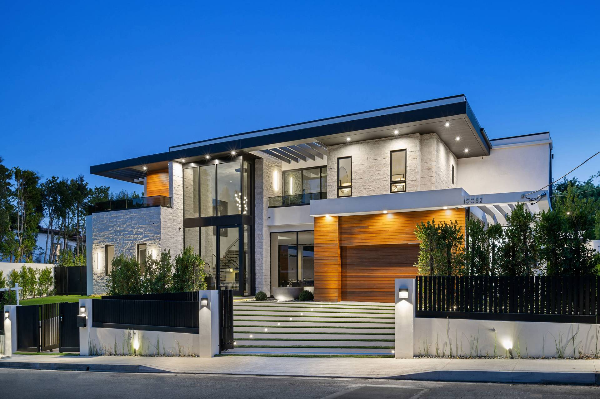
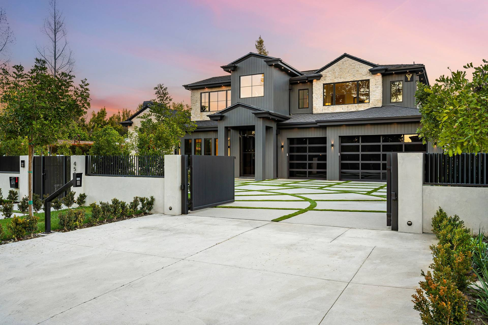
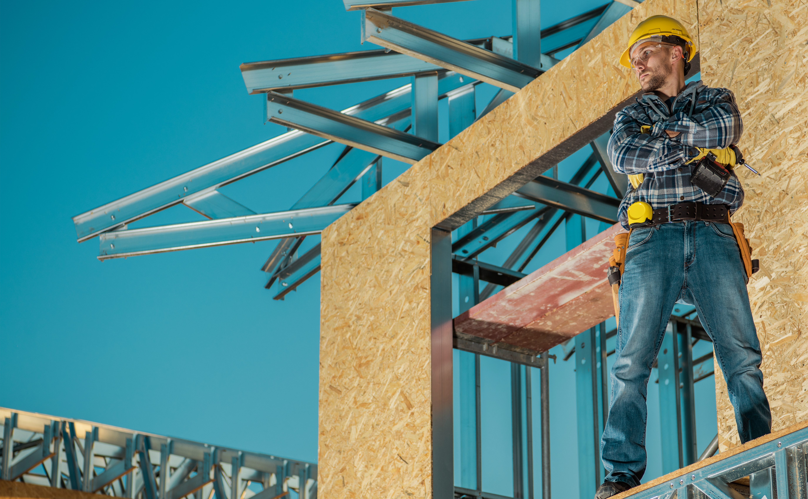
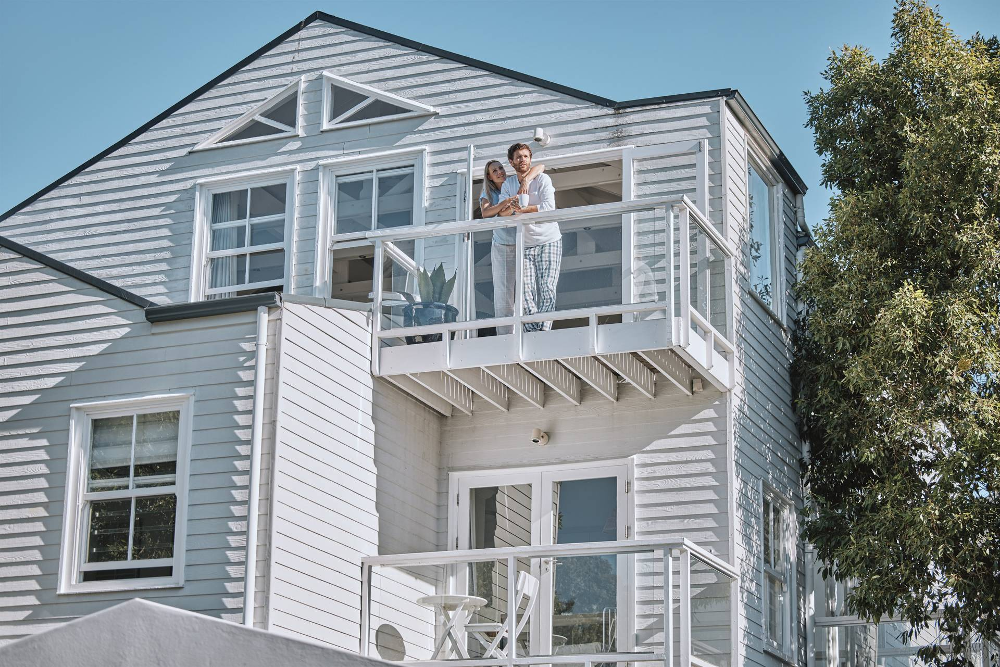

Architectural approach
As form follows feeling and light passes softly through our spaces, rooms expand to open views and then become more private in certain areas. Our residences embody these experiences, with landscapes that both showcase scenery and offer a sense of stability.
We select materials that tell a story — native timber weathered by time, stones sourced from local quarries, and finishes that age gracefully. Our architecture is a conversation between structure and land. Form follows not trend, but the feeling of belonging.

Interior design experience
Our interiors seamlessly blend indoor and outdoor elements, allowing residents to feel both comfortable and inspired by the openness to nature. Palettes draw from natural tones — stone, timber, soft neutrals — that create a timeless backdrop for living.
Every furnishing is chosen for its contribution to the whole. The result is refined simplicity: spaces that feel effortlessly beautiful, where the occupant becomes the focal point, not the décor. This is living distilled to essence.

Materials and craftsmanship
Oaks Living sources premium materials for authenticity and durability. Each finish is achieved with precision. Craftspeople are selected for their excellence and their respect for materials.
Details that will never be photographed receive the same care as those displayed publicly. This is where integrity lives — in the unseen, which is understated and built to last. It is the luxury that transforms.

Living atmosphere
At Oaks Living, life unfolds at a rhythm chosen, not imposed. Privacy is absolute. Nature is immediate. Quiet corners invite solitude. Open spaces facilitate connection.
Natural light shifts through spaces with intention. Air circulates through generous proportions. Boundaries between interior and exterior dissolve, allowing the landscape to become an extension of the home.

Connection to nature
Residences are positioned to honour vistas, to frame seasonal shifts, to invite birdsong and natural rhythms into daily life. Materiality echoes the surrounding landscape — colours and textures that resonate with place.
Outdoor living spaces are conceived with equal care to interiors. The experience of dwelling extends outward through terracing, planting, and thoughtful landscaping.